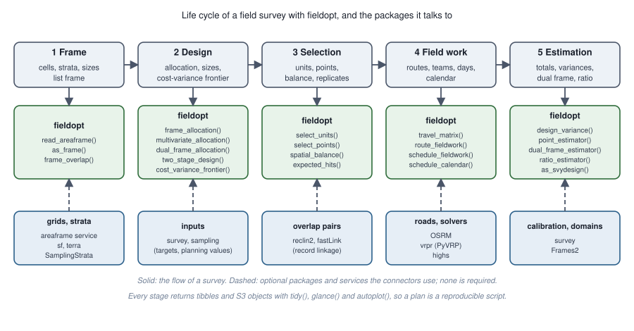
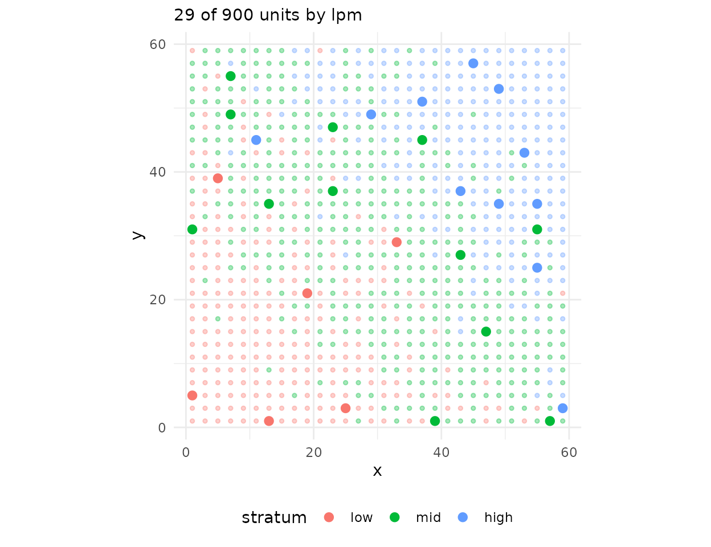
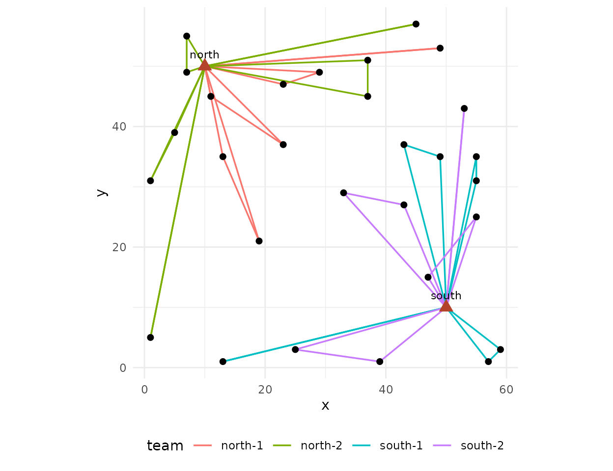

From the frame to the field: a survey plan end to end
Source:vignettes/survey-plan.Rmd
survey-plan.RmdThis vignette walks through one agricultural survey from the frame to the estimate, the way a planning team would: an area frame of cells with intensity strata and a list frame of large holdings, targets for two variables, a sample, the field work of several teams from two bases, and the estimates. Every number is synthetic; the point is the sequence and what each step hands to the next.

1. The frame
A region of 30 x 30 cells of 2 x 2 km, with an agricultural intensity
that grows from north-west to south-east; the three strata follow it.
Two towns host the field teams. In practice the cells come from
read_areaframe() or as_frame(); here they are
built in place.
library(fieldopt)
set.seed(2027)
cells <- expand.grid(x = seq(1, 59, by = 2), y = seq(1, 59, by = 2))
cells$unit <- paste0("c", seq_len(nrow(cells)))
cells$intensity <- pmin(1, pmax(0, (cells$x + cells$y) / 120 + rnorm(nrow(cells), sd = 0.12)))
cells$stratum <- cut(cells$intensity, c(-1, 0.35, 0.65, 2), labels = c("low", "mid", "high"))
cells$size <- 1 + 2 * cells$intensity # the size measure: expected farmland
cells$corn <- 40 * cells$intensity * cells$size + rnorm(nrow(cells), sd = 4) # planning values
cells$cattle <- 25 * (1 - cells$intensity) * cells$size + rnorm(nrow(cells), sd = 5)
bases <- data.frame(unit = c("north", "south"), x = c(10, 50), y = c(50, 10))
table(cells$stratum)
#>
#> low mid high
#> 240 412 2482. Targets and allocation
Two study variables with their own precision targets. Cost per cell
by stratum is a planning value; the next vignettes show how to measure
it by routing. multivariate_allocation() finds the cheapest
allocation that meets both targets at once.
strata <- do.call(rbind, lapply(split(cells, cells$stratum), function(d) data.frame(
stratum = as.character(d$stratum[1]), size = nrow(d), cost = c(low = 150, mid = 180, high = 220)[as.character(d$stratum[1])],
sd_corn = sd(d$corn), sd_cattle = sd(d$cattle))))
alloc <- multivariate_allocation(strata, sd = c("sd_corn", "sd_cattle"), target_cv = c(0.05, 0.08),
totals = c(sum(cells$corn), sum(cells$cattle)))
alloc
#>
#> ── Multivariate allocation ─────────────────────────────────────────────────────
#> Minimum cost 5480 for 2 targets.
#> sd_corn: target 3980000, attained 3797000 (binding).
#> sd_cattle: target 2579000, attained 933100.
#> # A tibble: 3 × 4
#> stratum size cost n
#> <chr> <int> <dbl> <int>
#> 1 low 240 150 6
#> 2 mid 412 180 12
#> 3 high 248 220 11
glance(alloc)
#> # A tibble: 2 × 7
#> variable target attained multiplier n cost bounded
#> <chr> <dbl> <dbl> <dbl> <int> <dbl> <lgl>
#> 1 sd_corn 3979529. 3797176. 0.00127 29 5480 FALSE
#> 2 sd_cattle 2579007. 933101. 0 29 5480 FALSE3. Selection
A stratified, spatially balanced sample with the allocated sizes, nine points inside each cell, and the spatial balance as a check.
n_h <- stats::setNames(alloc$n, alloc$stratum)
s <- select_units(cells, n = n_h, size = "size", strata = "stratum", seed = 11)
pts <- select_points(s, points_per_cell = 9, cell_size = 2, layout = "systematic", seed = 3)
c(cells = sum(s$sampled), points = nrow(pts), balance = round(spatial_balance(s), 3))
#> cells points balance
#> 29.000 261.000 0.203
autoplot(s)
4. Field work: routes, teams and days
Each sampled cell takes about three hours (nine points, interviews); a team-day is eight hours including travel. Two bases, two teams each, and the calendar says whether the work fits in the campaign.
frame <- rbind(bases, data.frame(unit = s$unit[s$sampled], x = s$x[s$sampled], y = s$y[s$sampled]))
m <- travel_matrix(frame, method = "euclidean", detour = 1.3, unit = "min")
m[] <- m[] * 1.5 # 2 km per cell unit at 80 km/h: 1.5 min per unit
m <- travel_matrix(frame, method = "euclidean", matrix = unclass(m), unit = "min")
money <- field_cost_model(per_travel = 1.2, per_route = 600, per_unit = 40, per_interview = 25,
interviews_per_unit = 3, currency = "BRL")
sch <- schedule_fieldwork(m, units = s$unit[s$sampled], teams = c(north = 2, south = 2), days = 12,
max_length = 480, service_time = 180, cost_model = money, iterations = 100)
sch
#>
#> ── Field schedule ──────────────────────────────────────────────────────────────
#> 29 units, 2 bases, 4 teams, 12 days available: the work fits.
#> "north": 15 units, 2 teams, 9 routes, 5 of 12 days.
#> "south": 14 units, 2 teams, 8 routes, 4 of 12 days.
#> Cost (BRL): 15680.
glance(sch)
#> # A tibble: 1 × 11
#> units bases teams routes days_available days_needed fits travel duration
#> <int> <int> <dbl> <int> <dbl> <int> <lgl> <dbl> <dbl>
#> 1 29 2 4 17 12 5 TRUE 1789. 7009.
#> # ℹ 2 more variables: utilisation <dbl>, cost <dbl>
autoplot(sch)
With the highs package the same routes can be
redistributed under the constraints of the campaign, a team away on some
days for example (schedule_calendar()); with the
vrpr package the routing can use the PyVRP solver
(engine = "vrpr").
5. The list frame and the overlap
Large holdings are also on a list. frame_overlap() tells
which cells hold listed establishments (to screen them out in the field,
or to mix the two estimates), and dual_frame_allocation()
sizes both samples.
big <- cells[cells$intensity > 0.8, ][sample.int(sum(cells$intensity > 0.8), 60), ]
list_frame <- data.frame(unit = paste0("L", seq_len(nrow(big))), x = big$x + runif(nrow(big), -0.9, 0.9),
y = big$y + runif(nrow(big), -0.9, 0.9), corn = big$corn * 1.5)
ov <- frame_overlap(list_frame, cells, cell_size = 2)
table(ov$list$domain)
#>
#> ab
#> 60
domains <- data.frame(domain = c("a", "ab", "b"), size = c(nrow(cells) - sum(ov$cells$listed > 0), sum(ov$cells$listed > 0), 10),
mean = c(mean(cells$corn), 1.5 * mean(big$corn), 100), sd = c(sd(cells$corn), 1.5 * sd(big$corn), 40))
dual_frame_allocation(domains, cost_a = glance(sch)$cost / sum(s$sampled), cost_b = 60, target_cv = 0.05)
#>
#> ── Dual-frame allocation ───────────────────────────────────────────────────────
#> Minimum cost for target variance 5567000: n_A = 101 (frame A, cost 540.8/unit),
#> n_B = 16 (frame B, cost 60/unit), theta = 0.34 (optimised).
#> Cost 55580; variance 5548000 (frame A 5460000, frame B 84000); CV 4.99% of the
#> total 47190.
#> Expected overlap units: 6.7 in the A sample, 13.7 in the B sample.
dual_frame_allocation(domains, cost_a = glance(sch)$cost / sum(s$sampled), cost_b = 60, target_cv = 0.05,
theta = "screening")
#>
#> ── Dual-frame allocation ───────────────────────────────────────────────────────
#> Minimum cost for target variance 5567000: n_A = 115 (frame A, cost 540.8/unit),
#> n_B = 27 (frame B, cost 60/unit), theta = 0 (fixed).
#> Cost 63810; variance 5527000 (frame A 5430000, frame B 94300); CV 4.98% of the
#> total 47190.
#> Expected overlap units: 7.7 in the A sample, 23.1 in the B sample.6. Estimation
After the field work: the cell totals from the points (here
simulated), the design-based total with its variance, and the hand-over
to the survey package for calibration and domain
estimates.
field <- s
field$corn_obs <- field$corn * (1 + rnorm(nrow(field), sd = 0.05)) # what the points measured
design_variance(field, "corn_obs")[, c("total", "se", "cv", "variance_method")]
#> # A tibble: 1 × 4
#> total se cv variance_method
#> <dbl> <dbl> <dbl> <chr>
#> 1 41200. 1838. 0.0446 stratified local-mean
c(true_total = sum(cells$corn))
#> true_total
#> 39897.51
if (requireNamespace("survey", quietly = TRUE)) {
d <- as_svydesign(field)
survey::svyby(~corn_obs, ~stratum, d, survey::svytotal)
}
#> stratum corn_obs se
#> low low 2971.308 594.4407
#> mid mid 17884.983 1254.5027
#> high high 20343.584 1153.05497. Scaling up
Nothing above depends on the size of the region: the selection runs
on a million cells in seconds, the routing is solved region by region
with schedule_fieldwork(region = ), and the travel matrices
come from a road network through
travel_matrix(method = "osrm") on a server of your own. The
vignette on routing gives the measured times.